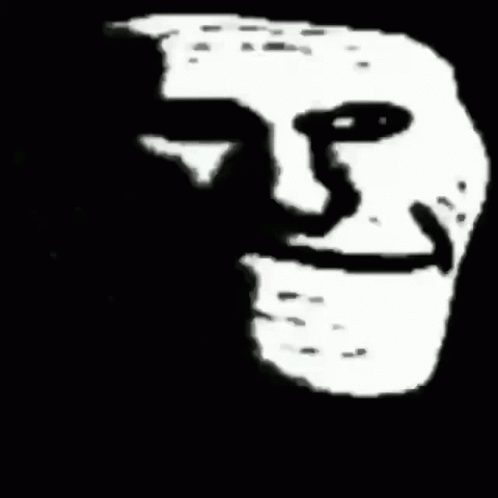

Esquilar una oveja es un proceso importante para los agricultores y criadores de ovejas, ya que ayuda a mantener a los animales limpios, saludables y cómodos, y también proporciona lana para la producción de textiles. Aquí hay una guía básica para esquilar una oveja: Preparación del área: Busca un área limpia y segura para esquilar a la oveja. Puede ser en un corral o en un espacio abierto con buena iluminación. Preparación del equipo: Asegúrate de tener todas las herramientas necesarias, como una máquina de esquilar o tijeras de esquilar, peine, cepillo y recortadoras. También necesitarás una mesa o plataforma para sujetar a la oveja durante el proceso. Revisión del estado de la oveja: Antes de comenzar, examina la oveja para detectar cualquier problema de salud o lesión que pueda requerir atención. Si la oveja tiene nudos grandes en la lana, es importante desenredarlos antes de comenzar a esquilar. Colocación de la oveja: Coloca a la oveja en la mesa o plataforma de manera que esté cómoda y segura. Puedes atar suavemente las extremidades para mantenerla quieta si es necesario. Comienza a esquilar: Con la máquina de esquilar o las tijeras, comienza a cortar la lana en secciones, trabajando desde el cuello hacia abajo y luego hacia los costados y la parte trasera del animal. Es importante mantener la piel estirada mientras esquilas para evitar cortes. Cuida la piel: Presta atención a la piel de la oveja mientras esquilas. Evita cortarla y trata de mantenerla libre de irritaciones o abrasiones. Revisión final: Una vez que hayas terminado de esquilar, revisa la oveja para asegurarte de que no queden mechones de lana sin cortar. Si es necesario, recorta cualquier área irregular para que la lana tenga un aspecto uniforme. Cuidado posterior: Después de esquilar, es importante cuidar la piel de la oveja. Puedes aplicar un tratamiento antibacteriano o antiséptico en cualquier corte menor para prevenir infecciones. Además, proporciona agua fresca y comida para que la oveja se recupere después del proceso. Es importante recordar que la esquila de ovejas puede ser un trabajo exigente y requerir habilidad y práctica para hacerlo correctamente y de manera segura. Si no te sientes cómodo esquilando ovejas por tu cuenta, considera contratar a un profesional o pedir ayuda a alguien con experiencia.
 anterior